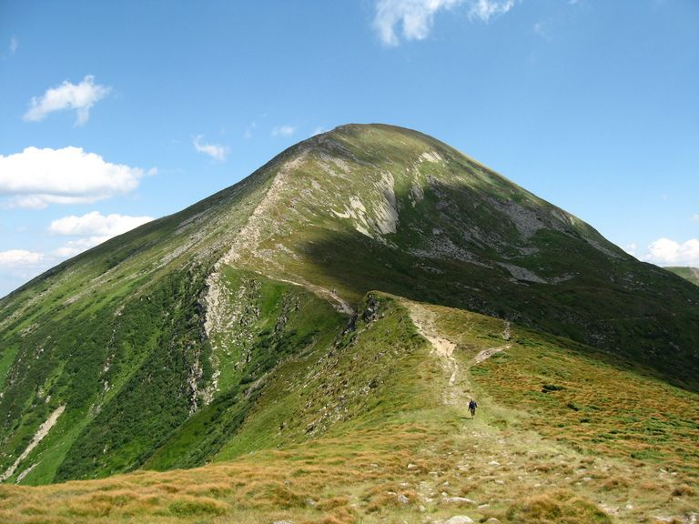
Говерла
Чорногора · 2061 м
Гори, полонини й хмари під ногами. Пізнавай Карпати, бережи їх і повертайся сюди знову.
популярні зараз

Чорногора · 2061 м
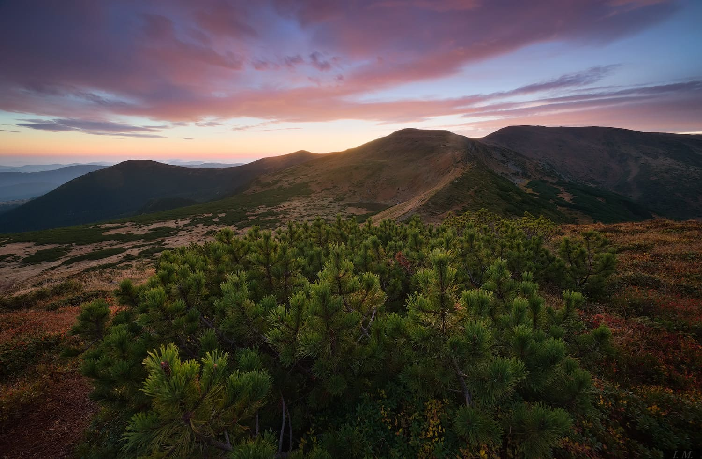
Чорногора · 1933 м
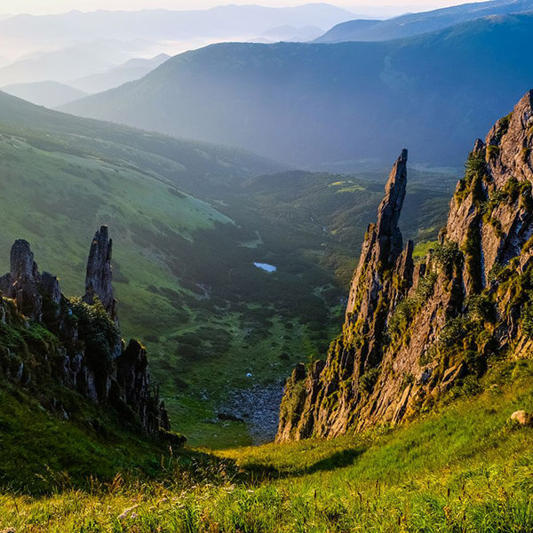
Чорногора · 1863 м
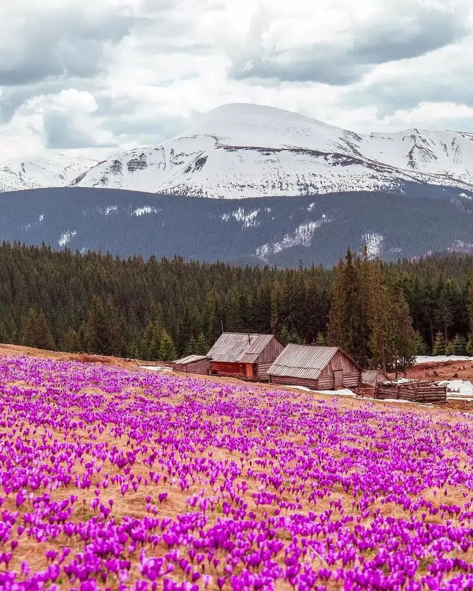
Чорногора · 1539 м
де відпочиває погляд
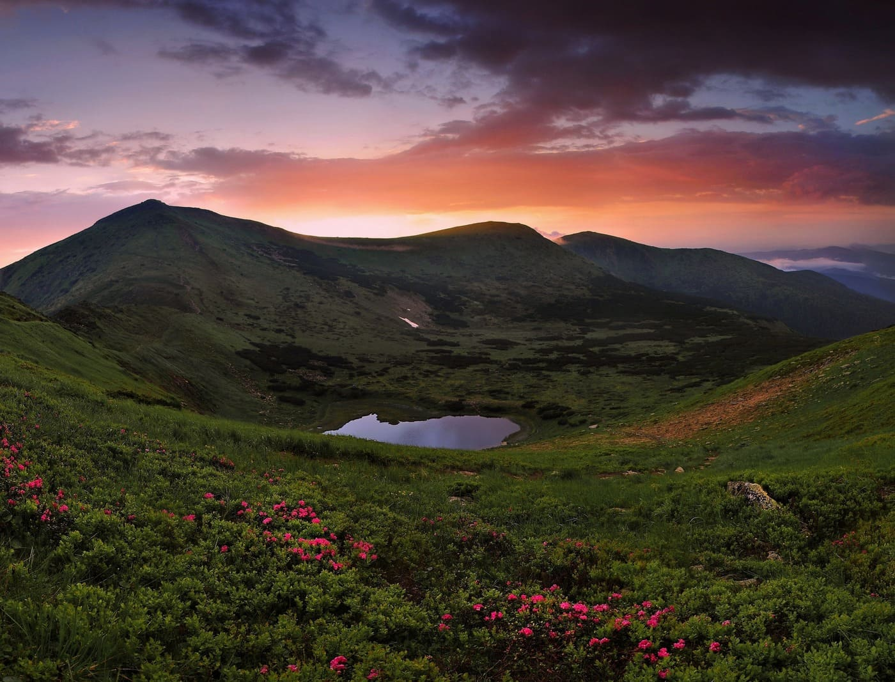
найвище озеро Чорногори · 1750 м
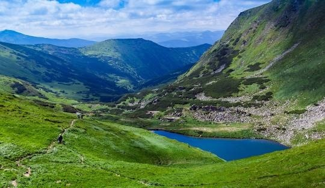
найвище озеро України · 1801 м
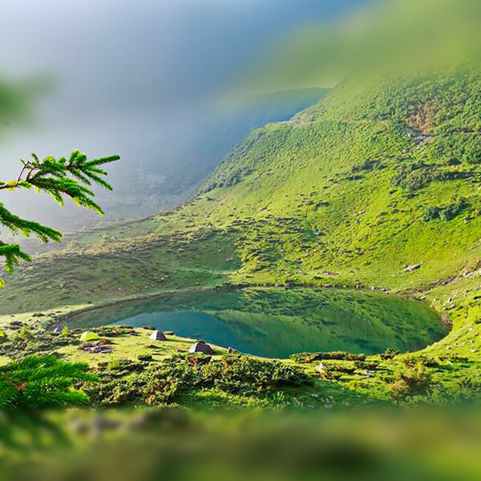
гірська полонина й курорт
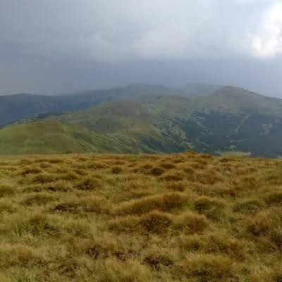
полонина під г. Говерла · 1822 м
традиції гірського краю
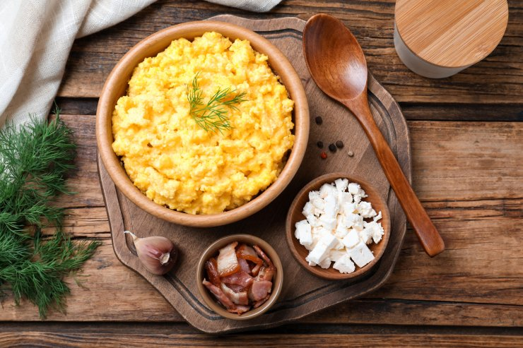
кукурудзяна каша на вершках і овеча бринза
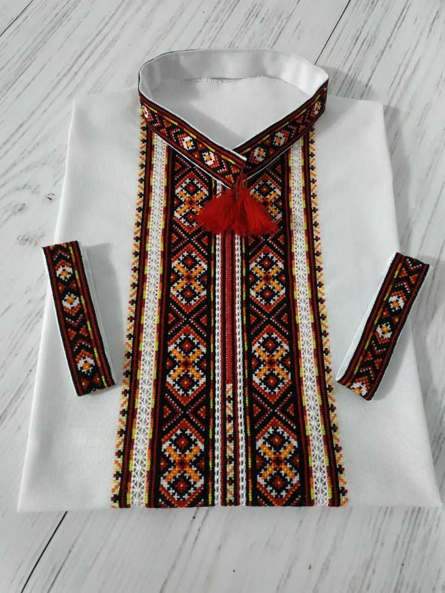
орнаменти кептарів і сорочок
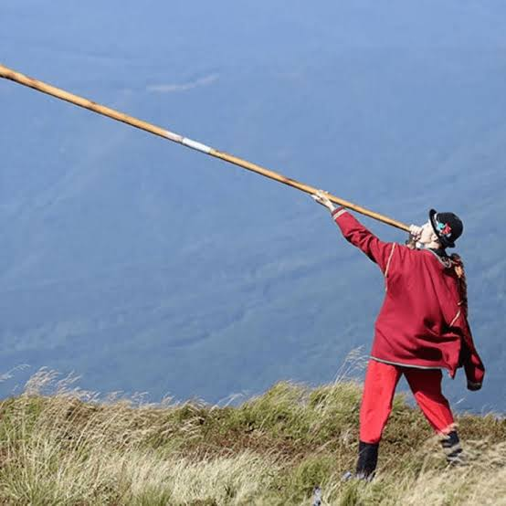
довгий дерев'яний ріг, голос полонин
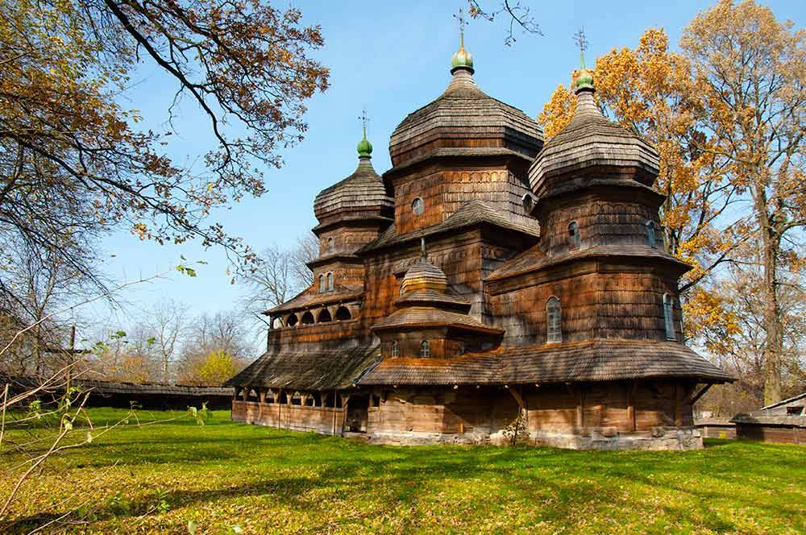
гуцульська сакральна архітектура
завантажено з сервера
Завантаження відгуків...
залиш заявку на тур